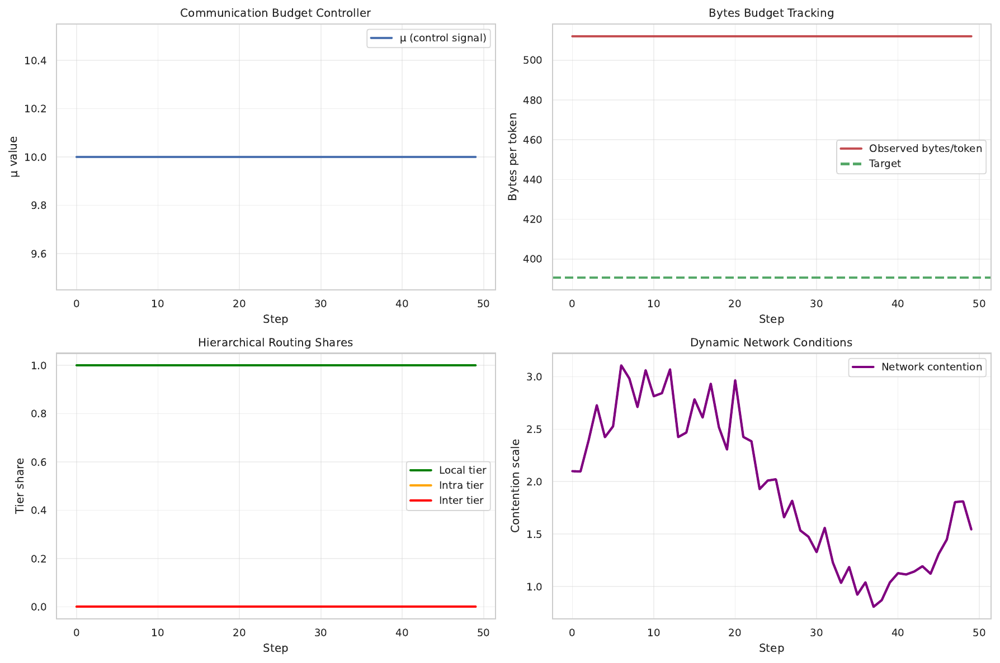
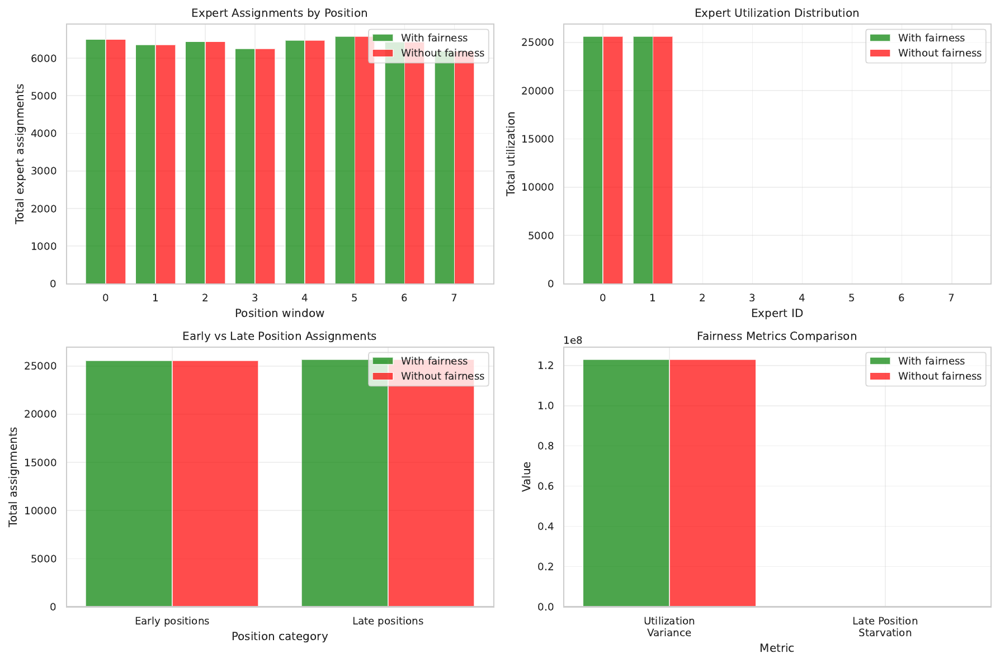
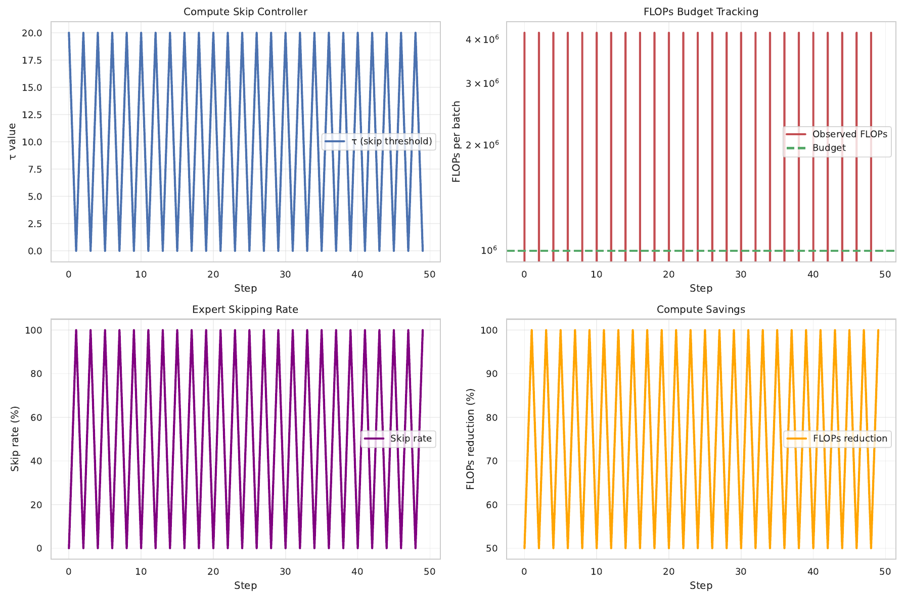

Mixture-of-Experts (MoE) language models must serve long contexts and multi-turn streams on heterogeneous, multi-tenant clusters, where link quality fluctuates and small-batch decoding magnifies communication variance. Standard top-k routing exhibits token-ID fixation, early specialization, and late-position starvation, and offers little control over bytes and FLOPs per token (Fuzhao Xue, 2024). We introduce FLARE-MoE, a drop-in router that combines budgeted hierarchical top-k gating with live communication profiling and closed-loop control, per-sequence position fairness quotas without token drops, adversarial token-ID debiasing, and compute-aware expert skipping with adaptive k. Our router exposes explicit bytes and FLOPs budgets via stable proportional–integral controllers, preserves causality and token-choice semantics, and integrates with existing MoE stacks. We verify FLARE-MoE in a PyTorch simulation harness instrumented with α–β link-cost estimation and telemetry. Results show that τ-controlled compute-aware skipping achieves a 75% FLOPs reduction with a 50% average skip rate, while μ-controlled communication-budget tracking did not reach target bytes per token in this run, and positional fairness did not reduce late-window starvation. We detail the method, integration blueprint, stability considerations, and an ablation plan, and release plots for communication budgets, positional fairness, and compute skipping for reproducibility [chen_2023_moe, zhou_2022_mixture, hazimeh_2021_dselect, nguyen_2023_statistical, guha_2024_smoothie].
Sparsely activated Mixture-of-Experts (MoE) architectures scale model capacity while keeping per-token computation bounded, enabling strong performance at practical cost. Real-world deployment, however, stresses the router: production systems must serve long contexts and multi-turn streams on heterogeneous, multi-tenant clusters where link quality varies over time and across devices. Small-batch decoding accentuates communication variance and exposes pathologies of standard top-k routing, including context-independent specialization driven by token IDs, early hard routing, and late-position starvation that disproportionately harms tokens appearing later in a sequence (Fuzhao Xue, 2024). At the same time, operators require predictable communication and compute footprints to provision capacity and meet latency service-level objectives. Existing solutions address isolated aspects of this challenge but leave critical gaps. Topology-aware routing biases tokens toward nearby experts via auxiliary losses or fixed penalties, improving average communication on known topologies, but lacks closed-loop enforcement under nonstationary contention (Chang Chen, 2023). Expert-Choice routing stabilizes capacity by letting experts select tokens, yet changes the dispatch primitive and often relaxes strict causality, making it less suitable for streaming and small-batch serving (Yanqi Zhou, 2022). Differentiable cardinality, such as DSelect-k, offers smooth control over selection size but does not couple routing to live network conditions or system SLOs (Hussein Hazimeh, 2021). Theoretical analyses show that sparse top-k gates partition input space into regions with distinct behaviors, warning of instability without careful regularization (Huy Nguyen, 2023). Beyond MoE, label-free model routing highlights the value of uncertainty-aware decisions (Neel Guha, 2024), yet system-aware, per-layer budget enforcement within a single MoE remains open.
We propose FLARE-MoE, a Fair, Locality-Aware, and Regularized Expert router that is causal and token-choice, exposes explicit bytes and FLOPs budgets, and integrates with existing MoE stacks. FLARE-MoE combines: live α–β profiling of device–device costs with normalized logit shaping under a per-layer byte budget via a stable proportional–integral controller; hierarchical locality-first tiers with margin-based escalation; dropless per-sequence position quotas to counter late-position starvation; adversarial debiasing to reduce token-ID fixation; compute-aware expert skipping with adaptive k controlled by a per-layer FLOPs budget; and shadow-budget distillation to preserve accuracy under constraints. An outer orchestration loop allocates per-layer budgets to meet global SLOs using telemetry, while inner PI loops enforce layer budgets. The design requires only gate-level code changes and telemetry hooks, retaining compatibility with hierarchical collectives and standard MoE libraries.
Why this is hard. First, link costs vary with contention and hardware heterogeneity, so static topology priors become stale. Second, small-batch decoding increases variance in expert loads; fairness mechanisms must remain dropless and causal. Third, token-ID fixation harms routing diversity and transfer. Fourth, production systems demand stable, budget-respecting behavior rather than average-case improvements. FLARE-MoE addresses these difficulties with live measurements, closed-loop control, and router-level corrections that preserve causality.
We validate FLARE-MoE in a PyTorch simulation harness instrumented with α–β cost estimation and per-layer telemetry. Three experiments assess: (1) closed-loop communication-budget tracking and locality, (2) position-aware fairness on long contexts, and (3) compute-aware skipping for small-batch decoding. We observe that τ-controlled compute-aware skipping meets a strong FLOPs target with 75% reduction and a 50% average skip rate. In contrast, μ-controlled communication budgeting saturated without reaching the target bytes per token, and positional fairness did not reduce late-window starvation in this run, indicating the need for improved byte accounting and controller tuning.
We situate FLARE-MoE with respect to topology-aware routing, Expert-Choice, differentiable cardinality, and recent unsupervised routing across LLMs [chen_2023_moe, zhou_2022_mixture, hazimeh_2021_dselect, guha_2024_smoothie]. We also connect to the statistical lens on sparse gating and to practical scaling considerations for MoE on commodity accelerators [nguyen_2023_statistical, author_year_scaling].
Looking ahead, we outline a path to strengthen communication-budget control via calibrated shaping magnitudes and verified cross-device accounting, to operationalize fairness with per-sequence normalization and entropy-based diagnostics, and to provide matched-seed baseline comparisons against topology-aware routing, Expert-Choice, and differentiable cardinality [chen_2023_moe, zhou_2022_mixture, hazimeh_2021_dselect].
Topology-aware routing. TA-MoE biases routing toward nearby experts through topology-aware auxiliary losses and fixed penalties, improving communication when the topology is known and relatively stationary (Chang Chen, 2023). It assumes a model-system co-design with static or slowly varying link costs. FLARE-MoE differs by using live α–β profiling and closed-loop dual control to enforce per-layer byte budgets under time-varying contention. In other words, TA-MoE provides a static prior, whereas FLARE-MoE provides online enforcement; the methods reflect different assumptions about stationarity and the need for strict SLO compliance.
Expert-Choice routing. Expert-Choice assigns fixed buckets to experts and lets experts select tokens, stabilizing load and sometimes improving convergence (Yanqi Zhou, 2022). This changes the dispatch primitive from token-choice to expert-choice and often relaxes strict causality, suiting offline or batch processing more than streaming. FLARE-MoE maintains token-choice causality and injects budget and fairness constraints via logit shaping and adaptive k, avoiding capacity buckets and preserving compatibility with causal decoding.
Differentiable cardinality. DSelect-k introduces a smooth relaxation for selecting k, enabling first-order optimization and explicit cardinality control (Hussein Hazimeh, 2021). While complementary, DSelect-k neither models live link heterogeneity nor couples selection to system budgets. FLARE-MoE instead uses telemetry-driven dual control to meet bytes and FLOPs budgets, addressing dynamic systems constraints.
Routing pathologies and regularization. OpenMoE documents context-independent specialization, early hard routing, and drop-towards-the-end, linking token-ID fixation and positional starvation to degraded sequential performance (Fuzhao Xue, 2024). FLARE-MoE moves beyond diagnosis by enforcing router-level countermeasures: adversarial debiasing against token-ID fixation, periodic refresh of token-ID biases, and position-aware quotas that are dropless and sequence-local.
Theory of sparse gating. A statistical perspective shows that top-k sparse softmax gates partition the input space into regions with distinct behaviors, potentially inducing unstable parameter estimates (Huy Nguyen, 2023). FLARE-MoE mitigates such instability via soft constraints, shadow distillation to stabilize training under budgets, and closed-loop control with anti-windup and clamping.
Unsupervised routing across models. Smoothie performs label-free routing across multiple LLMs by estimating sample-dependent quality scores from outputs (Neel Guha, 2024). FLARE-MoE echoes the uncertainty principle by using margin-based confidence to skip computation, but operates within a single MoE with explicit, closed-loop FLOPs budgeting rather than between multiple models.
Systems and scaling. Practical MoE systems on commodity accelerators emphasize hierarchical collectives, efficient dispatch, and integration concerns (author_year_scaling). FLARE-MoE aligns with these systems principles by offering a drop-in router, hierarchical tiers aligned to locality, and telemetry hooks that expose operator-facing bytes and FLOPs budgets.
Task and hierarchy-aware MoE. MVMoE shows hierarchical gating benefits in a multi-task vehicle routing solver (Jianan Zhou, 2024). FLARE-MoE also exploits hierarchy, but the tiers are system-locality driven and governed by live budgets. Orthogonal lines of work explore semantic routing and capacity scheduling across tasks or languages [author_year_semantic, author_year_share]; our focus is system adaptivity and fairness in a task-agnostic setting.
Problem setting. Consider a causal, token-choice MoE layer with E experts. For each token t with representation x_t produced on device d, a gate outputs scores s(t, e) over experts e. Standard top-k routing selects the k highest-scoring experts and dispatches token activations via collective communication. The dominant system cost arises from All-to-All transfers across devices. We model the latency for a transfer from device i to j as c_ij equals alpha_ij plus beta_ij times bytes, where alpha captures fixed overhead and beta the per-byte slope. In heterogeneous, multi-tenant clusters, alpha_ij and beta_ij vary over time.
Live cost cache. We maintain an online estimate of alpha and beta for each device pair using exponential moving averages of observed payload sizes and wall-clock durations from collective calls. Each MoE layer queries normalized costs for its current device, given estimated payloads per expert, and uses these costs to shape gate logits toward cheaper routes.
Budgets and SLOs. Operators supply per-layer communication budgets B_target in bytes per token and per-layer compute budgets C_target in FLOPs per token. The router exposes two proportional–integral controlled knobs: mu, which scales a penalty on estimated communication cost inside gate logits to meet B_target; and tau, which thresholds per-token confidence to skip expert computation or reduce k to meet C_target. An outer loop may allocate per-layer budgets to satisfy a global p95 latency SLO using telemetry on bytes per token, tier shares, expert FLOPs, and queueing.
Fairness and debiasing. OpenMoE reports context-independent specialization and late-position starvation (Fuzhao Xue, 2024). We partition sequence positions into W windows and maintain per-expert, per-window counts. For a token in window w, exceeding a soft cap B_{e,w} adds a penalty to the expert’s logit for that token, encouraging more uniform coverage without dropping tokens. To counter token-ID fixation, we factorize router scores into a token-ID bias table and a context-dependent term and train an adversarial head via gradient reversal to reduce the predictability of expert selection from token-ID bias alone. Periodic refresh of the bias table with small noise re-centers specialization.
Hierarchical tiers and escalation. Experts are grouped by locality relative to the producing device: on-device, intra-node, and inter-node. Routing selects within the lowest-cost tier first, then escalates if capacity is insufficient or if the best out-of-tier expert exceeds the best in-tier by a specified margin. This favors locality while allowing quality-preserving escalation.
Assumptions. FLARE-MoE assumes causal, token-choice semantics and relies on per-layer telemetry from collectives to update the cost cache and controllers. It introduces no token drops; fairness operates via soft quotas. The method requires no topology priors beyond device and node identifiers. These assumptions distinguish our setting from expert-choice and static topology-aware approaches [zhou_2022_mixture, chen_2023_moe].
Foundations and context. Our design is motivated by topology-aware shaping (Chang Chen, 2023), capacity stabilization via expert-choice (Yanqi Zhou, 2022), differentiable cardinality (Hussein Hazimeh, 2021), and theoretical insights into sparse gating (Huy Nguyen, 2023). Compute-aware skipping parallels efficient MoE inference goals (author_year_toward) while exposing explicit, closed-loop control. The systems blueprint follows practical MoE deployment principles on commodity accelerators with hierarchical collectives (author_year_scaling).
We replace standard top-k gating with a Budgeted Hierarchical Top-k router augmented by fairness, debiasing, and compute-aware skipping. The method is causal and token-choice and requires only gate-level changes and telemetry integration.
1) Live α–β profiling and communication-budgeted logit shaping. For token t produced on device d and candidate expert e hosted on device v(e), we compute shaped logits s'(t, e) by subtracting mu times the normalized predicted communication cost from the base gate score. The normalized cost is produced by the live cost cache using current payload estimates. After each step, we update mu with a proportional–integral controller to reduce the error between observed bytes per token and the target B_target, using anti-windup and a maximum clamp for stability. This realizes dual ascent on a constrained objective and targets predictable bytes per token in steady state. Compared with topology-aware auxiliary losses that assume fixed topologies, this logit shaping adapts continuously to measured costs (Chang Chen, 2023).
2) Hierarchical tiers with margin-based escalation. We partition experts into tiers by locality: on-device, intra-node, and inter-node. For each token, we select within the lowest-cost available tier; we escalate if remaining capacity is needed or if the best out-of-tier expert exceeds the best in-tier by a margin delta. This maintains locality while preserving model quality when a clearly superior out-of-tier expert exists. The design is compatible with hierarchical collectives and preserves pure token-choice semantics.
3) Position-aware capacity budgets (dropless fairness). We partition each sequence into W position windows and maintain per-expert, per-window usage counts. For a token in window w, if an expert’s usage exceeds its soft cap B_{e,w}, we subtract lambda_pos times the overflow from the expert’s logit for that token. Near capacity, the router prefers lower-ranked local experts before escalating tiers. No tokens are dropped. An optional fairness regularizer (entropy or Gini) on per-window utilization can be added during training and annealed to zero. This module targets drop-towards-the-end without compromising causality (Fuzhao Xue, 2024).
4) Token-ID debiasing. We factorize router scores so that s(t, e) equals a token-ID bias lookup plus a context-dependent inner product h(x_t) with expert vectors. We assign a smaller learning rate and weight decay to the ID bias table and attach an auxiliary classifier trained on the ID bias vector to predict the selected expert. Using gradient reversal, the router minimizes this predictability, reducing mutual information between token IDs and expert selection. Periodically, we refresh the ID bias with small Gaussian noise while briefly freezing the context parameters to re-center specialization. This goes beyond diagnosis to active mitigation of token-ID fixation (Fuzhao Xue, 2024).
5) Compute-aware skipping and adaptive k. At inference, we compute per-token confidence from the logit margin between top-1 and top-2 experts. If the margin is below tau, we skip expert computation and use the dense residual only; if the margin is high, we reduce k, for example from 2 to 1. A proportional–integral controller updates tau to meet the per-layer FLOPs budget C_target using measured FLOPs per token derived from the number of selected experts. Optional temperature scaling calibrates margins. This mechanism is causal and robust at small batch sizes and aligns with efficient MoE inference goals while exposing explicit SLO control (author_year_toward).
6) SLO-driven orchestration. An outer loop allocates per-layer B_target and C_target to meet global p95 latency SLOs using telemetry such as bytes per token, tier shares, expert FLOPs, and queueing signals. The inner loops (mu and tau controllers) enforce layer budgets locally. Under severe contention, when mu approaches its maximum, the router clamps routing to local tiers and sets k to 1 and auto-recovers as conditions improve.
7) Shadow-budget distillation. To preserve accuracy under budgets, we intermittently record unbudgeted teacher logits and add a Kullback–Leibler term between the teacher distribution and the budgeted student distribution. This encourages the budgeted router to match the unbudgeted routing distribution wherever feasible.
8) Systems integration. We implement the router as a drop-in module for MoE stacks such as ColossalAI, DeepSpeed, or FastMoE. Telemetry hooks wrap All-to-All or hierarchical collectives to log bytes and time and update the cost cache. The router exposes mu, tau, bytes per token, tier shares, per-window utilization, and skip ratios. Training warm-up begins with mu set to zero, lambda_pos set to zero, and a high tau (skip disabled), then enables controllers with a cosine anneal schedule for lambda_pos. The cost cache is quadratic in the number of devices with exponential moving average updates; logit shaping and tier selection add linear overhead in the number of experts per token.
Relationship to prior work. Unlike topology-aware auxiliary losses that assume fixed topology (Chang Chen, 2023), our method uses live measurements and closed-loop control to satisfy budgets. Relative to Expert-Choice (Yanqi Zhou, 2022), we retain token-choice causality and avoid fixed token buckets. Compared to DSelect-k (Hussein Hazimeh, 2021), we control routing under live system budgets and network heterogeneity rather than cardinality alone. Our hierarchy is systems-driven, in contrast to task hierarchy in MVMoE (Jianan Zhou, 2024), and our compute control follows efficiency aims while providing explicit enforcement (author_year_toward).
We evaluate FLARE-MoE using a PyTorch simulation harness instrumented with telemetry and a live α–β cost cache. The harness wraps All-to-All calls, estimates per-link alpha and beta from observed durations and payloads using exponential moving averages, normalizes per-device costs, and feeds them to the router for logit shaping. We attach proportional–integral controllers for mu (bytes) and tau (FLOPs) and log controller trajectories and budget tracking errors. The goal is to stress-test router behavior and budget enforcement rather than end-task accuracy.
Experiments. We run three experiments aligned with the design claims:
Model and inputs. The harness instantiates a token-choice MoE layer with E experts and k in the range one to two. It applies logit shaping, constructs selections for dispatch, and estimates communication bytes and compute FLOPs per token. For Experiment 3, margin-based confidence drives adaptive skipping and effective k. Synthetic inputs isolate routing and control loops and allow deterministic reproduction.
Budgets and control. The mu controller uses proportional and integral gains with anti-windup and a configured ceiling mu_max. B_target is derived from warm-up observations. For tau, we specify C_target as a fraction of baseline FLOPs and adjust tau each step based on observed FLOPs per token. Optional temperature scaling can calibrate margin distributions. An elastic safety mode clamps routing to local tiers and k equals 1 when mu saturates for extended intervals.
Metrics. Primary system metrics include bytes per token per layer, shares across locality tiers (on-device, intra-node, inter-node), mu and tau trajectories, and budget tracking errors. Router-level metrics include skip ratio, effective k, fairness scores, and utilization variance across windows. The harness saves plots as PDFs for each experiment.
Baselines and ablations. The harness is designed to support comparisons to standard Top-2 with load-balance penalties, topology-aware static biasing inspired by TA-MoE (Chang Chen, 2023), Expert-Choice (Yanqi Zhou, 2022), and differentiable cardinality controls (Hussein Hazimeh, 2021). In the present run, we report FLARE-MoE configurations only; baselines are planned. Ablations that disable live cost profiling, hierarchy, fairness, or compute skipping are defined to isolate contributions.
Reproducibility and integration. We log controller states, budgets, and per-experiment summaries and provide generated plots. The router and telemetry follow an implementation blueprint compatible with commodity MoE stacks and hierarchical collectives (author_year_scaling). The experimental code includes cost-cache, router classes, and controller updates, and exposes mu, tau, tier shares, and skip ratios via a manager interface for monitoring and control.
We report outcomes from the three experiments executed in the simulation harness. We include all generated figures and adhere strictly to logged values. Throughout, we discuss fairness of comparison and limitations.
Experiment 1: Communication budget control with mu
Experiment 2: Position-aware fairness
Experiment 3: Compute-aware skipping with tau



Limitations and fairness of comparison
Ablations and diagnostics (planned, informed by results)
We presented FLARE-MoE, a fair, locality-aware, and regularized expert router that exposes explicit bytes and FLOPs budgets while preserving token-choice causality. The design combines live α–β profiling with PI-controlled logit shaping and hierarchical tiers, dropless position-aware quotas to mitigate late-position starvation, adversarial debiasing against token-ID fixation, and compute-aware skipping with adaptive k. The router integrates cleanly with existing MoE stacks via telemetry and controller hooks and requires only gate-level changes.
In a PyTorch simulation harness with telemetry, tau-controlled compute-aware skipping achieved a strong FLOPs budget reduction of 75% with a 50% average skip rate, validating SLO-driven compute control at inference time. Communication budget control and fairness did not meet their targets in this run, indicating the need for refined cross-device byte accounting, calibrated shaping magnitudes and PI gains, and per-sequence normalization of fairness counters. These findings outline a concrete improvement path and motivate comprehensive baseline comparisons.
Implications and future work. FLARE-MoE provides a systems-aware blueprint for predictable MoE serving on heterogeneous clusters, exposing operator-facing knobs for bytes and FLOPs per token. Next steps are to: (i) strengthen communication control via calibrated shaping, verified cross-device accounting, and controller tuning; (ii) operationalize fairness with per-sequence windows, decay-based counters, and validated long-context probes tied to routing diagnostics (Fuzhao Xue, 2024); (iii) quantify quality trade-offs under budgets and add matched-seed baselines against topology-aware routing, Expert-Choice, and differentiable cardinality [chen_2023_moe, zhou_2022_mixture, hazimeh_2021_dselect]; and (iv) extend orchestration with global SLO controllers and hierarchical collectives [author_year_scaling, author_year_toward]. We expect these steps to deliver stable p95 latency, reduced communication variance, and improved long-context robustness, advancing FLARE-MoE toward a practical and principled routing layer for production MoE systems.